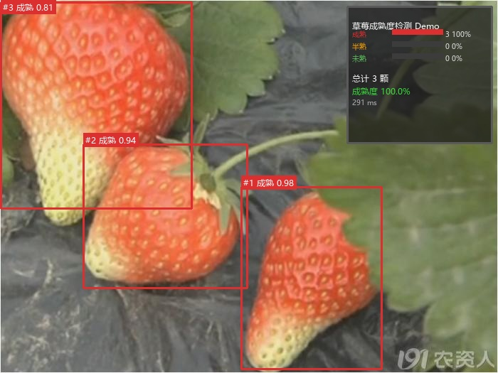
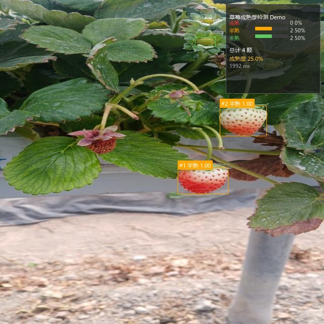
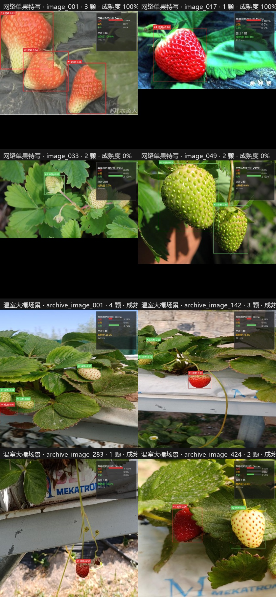

YOLO 找出画面里的每一颗草莓，ResNet18 判定它是成熟、半熟还是未熟， 并给出整图成熟度指数。基于两套自建数据集联合训练。
浏览器端 Demo（推荐，零部署）：模型跑在访客自己的浏览器里（ONNX Runtime Web / WASM），
图片不会上传到任何服务器 —— 打开网页就能上传图片、看成熟度判定。
服务端 Demo：完整 Flask 应用（批量评测、指标对比、GPU 加速），需部署到服务器。
检测器 YOLO11n（fp32，10.1 MB）+ 分类器 ResNet18（int8，10.8 MB）， 首次访问需下载约 32 MB（之后浏览器缓存）。 LetterBox、YOLO 解码、NMS、ROI 裁剪、分类预处理全部与 Python 端逐项对齐， 实测成熟度判定 17/17 与 PyTorch 相同。
💡 图片全程留在本地，隐私友好；单图推理约 0.6~1.0 秒（CPU/WASM）。
下面是实际运行结果，标注由模型直接生成：


完整的 Flask 应用：单张分析、数据集浏览、批量评测、模型指标对比四个页面，
API 齐全。仓库内置 Dockerfile 与 render.yaml，
在 GitHub 仓库页点 Deploy to Render 即可部署，几分钟后得到一个公网地址。
💡 免费版实例空闲 15 分钟会休眠，首次访问约需 1 分钟冷启动。
两阶段流水线。检测负责"找"，分类负责"判"，职责分离让两个模型都能独立迭代。
640×640 输入，输出草莓外接框。合并两套数据集训练（630 图 / 1917 框），覆盖网络特写与温室大棚两种域。
按检测框裁单果，外扩 12% 并补成正方形；若外扩会带进邻果，就逐级收缩 padding，避免把邻居的颜色混进来。
对每颗草莓的 ROI 做三分类（成熟 / 半熟 / 未熟），输出三类概率。合并两套 ROI 训练（1554 张）。
按成熟度配色画框（成熟=红 / 半熟=橙 / 未熟=绿），输出三类数量、占比条、成熟度指数（成熟 1 / 半熟 .5 / 未熟 0 的加权平均）。
下面每一行都是本仓库代码跑出来的，不是 PPT 上的数字。
| 配置 | 网络特写域 | 温室大棚域 | 温室域检测 P / R |
|---|---|---|---|
| v1 原版检测器 + v1 原版分类器 | 97.6% | 65.9% | .786 / .550 |
| v1 原版检测器 + 合并分类器 | 100.0% | 86.4% | .786 / .550 |
| 合并检测器 + 合并分类器（默认） | 100.0% | 92.5% | .838 / .838 |
原版分类器在温室域只有 65.9% —— 跨域崩溃。用归档集补上 247 个 half 框重训后恢复到 90.9%， 合并两集训练后两个域都不再崩。
| 分类器 | 训练数据 | v1 test | 归档 test | half F1 |
|---|---|---|---|---|
| v1 原版 | 168 张 ROI（仅 11 个 half） | acc .960 | acc .621 | .000 |
| 归档集 | 1386 张 ROI（247 个 half） | acc 1.000 | acc .872 | .788 |
| 合并 | 1554 张 ROI | acc 1.000 | acc .863 | .773 |
⚠️ half 类是最难的部分：v1 只有 11 个 half 框、3 个场景，原分类器学不到半熟， 推理时永远不会输出「半熟」。归档集把它补到 247 个框，F1 从 0 拉到 .79~.86。
左上为网络单果特写，右下为温室大棚；每张左上角的标题条是自动生成的统计。

点上面的「一键部署到 Render」，或在仓库页点 Deploy to Render。
git clone https://github.com/MokingMid/strawberry-maturity-demo.git
cd strawberry-maturity-demo
docker build -t strawberry-demo .
docker run -p 8000:8000 strawberry-demo单图 / 批量 / 视频 / 摄像头，四种输入模式。
pip install -r requirements.txt
python demo/strawberry_demo.py \
--image samples/v1/detection/images/image_001.jpg \
--out demo_out
python demo/strawberry_demo.py \
--folder samples/v1/detection/images --out demo_out
python demo/strawberry_demo.py --camera 0 --guiFlask 开发服务器，和 Render 上跑的是同一份代码。
pip install -r requirements.txt
python app.py
# → http://127.0.0.1:800031 个单元测试 + 两个评测脚本，指标可一键复算。
python -m unittest discover -s tests -v
python demo/tools/compare_classifiers.py
python demo/tools/compare_end2end.py仓库只附带 20 张样例（含标注）；完整数据集因体积与第三方来源，不随仓库分发。
| 数据集 | 场景 | 图片 | 标注框 | ripe / half / unripe | 划分 |
|---|---|---|---|---|---|
strawberry_v1 | 网络单果特写 | 64 | 183 | 76 / 11 / 96 | 按 scene_group 划 45/10/9 |
strawberry_archive_v1 | 温室大棚连拍 | 566 | 1734 | 520 / 247 / 967 | 按 scene_group 划 396/84/86 |
strawberry-maturity-demo/
├─ app.py WSGI 入口（Render / gunicorn）
├─ Dockerfile CPU 版镜像
├─ render.yaml Render 蓝图（一键部署）
├─ requirements.txt
├─ models/
│ ├─ detector_merged.pt 合并检测器（5.2 MB）
│ └─ classifier_merged.pt 合并分类器（42.7 MB）
├─ strawberry_cv/ 算法代码（CLI / 数据 / 模型 / 训练 / 评测 / 推理）
├─ demo/
│ ├─ strawberry_demo.py 命令行 Demo 入口
│ ├─ demo_core.py 两阶段推理 + 中文渲染 + 结果导出
│ ├─ paths.py 跨布局的路径解析
│ ├─ web/ Flask 可视化网站
│ ├─ tools/ 数据合并 / 模型对比 / 画廊生成
│ └─ tests/ 回归测试
├─ samples/ 20 张样例图 + 标注（网站开箱可用）
├─ traditional_cv/ 传统 CV 基线（HSV + GLCM + LBP + SVM）
├─ configs/base.json 全部配置
├─ docs/ 交接文档 / 数据审计 / 开题材料
└─ site/ GitHub Pages 静态展示站（本页）